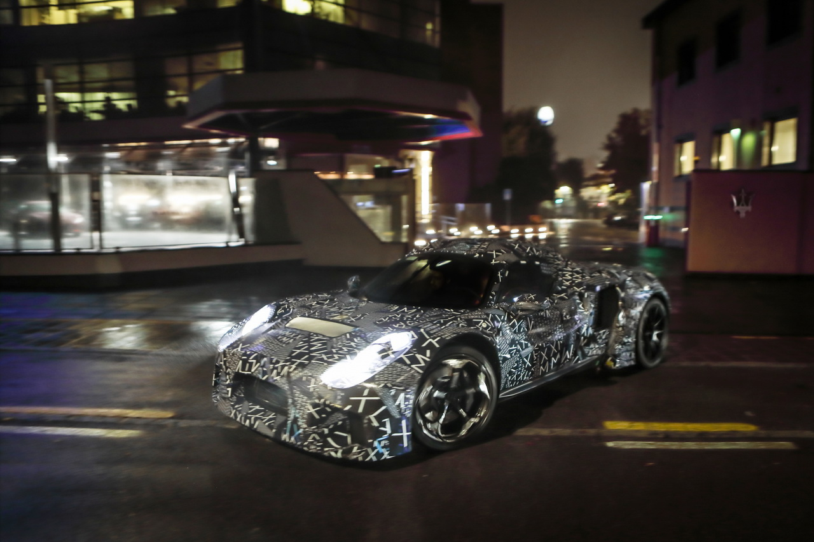
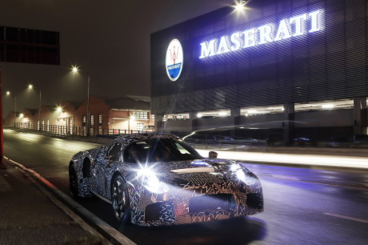

Suite aux tests "mule", le premier prototype complet de la nouvelle super voiture de sport Maserati MC20 est sorti du Maserati Innovation Lab de Modène. Maserati a un ADN 100% italien et est en mouvement continu: la marque a identifié et sélectionné une série de lieux emblématiques en Italie qui véhiculent efficacement la déclaration mondiale des «Masters of Italian Audacity», dont le nouveau MC20 est la première et ultime expression. Le prototype a été photographié la nuit sur la Piazza degli Affari à Milan, sous la sculpture L.O.V.E de Maurizio Cattelan, symbole de l'audace italienne dans l'art contemporain international. Maintenant, cela marque le début d'une période d'essais sur route et sur piste, dans diverses conditions d'utilisation, pour acquérir des données vitales pour la préparation de la configuration finale de la voiture. Au cours des prochains jours, le prototype visitera d'autres lieux symboliques de l'audace italienne, avant de retourner à Modène.  